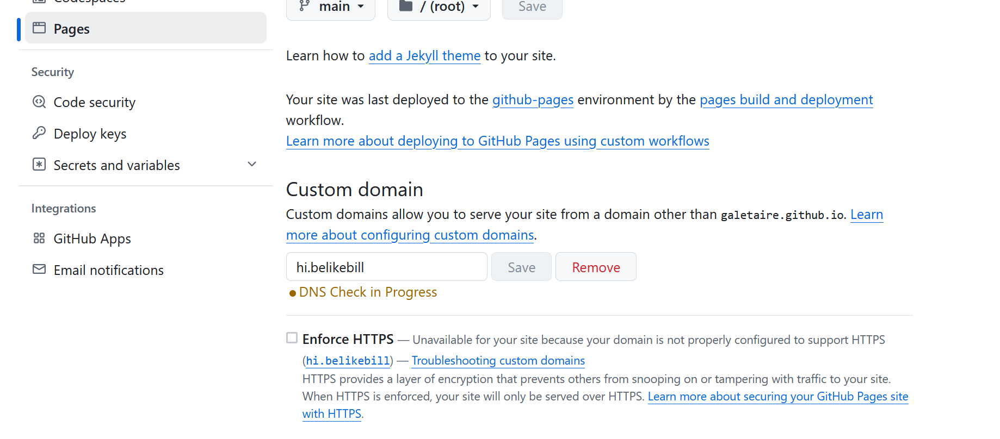
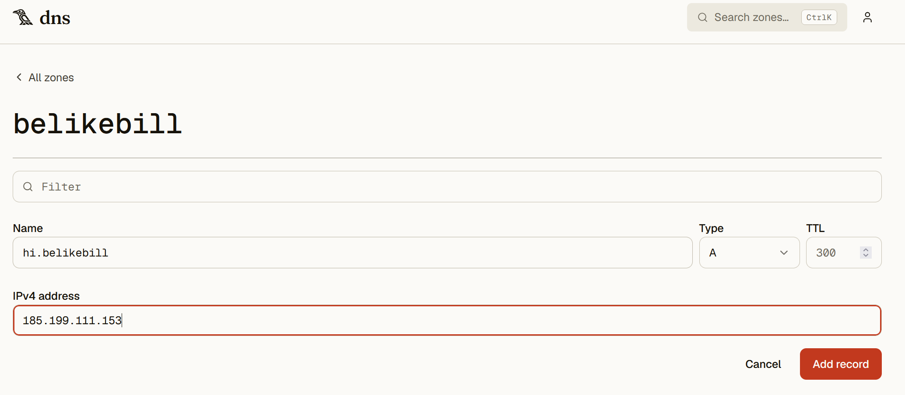

How to Host an HTTP website on a Handshake TLD
Note: This guide does not cover how to obtain a HNS domain or coins, and it does not recommend crypto investment whatsoever. Skepticism around blockchain projects is more often right than wrong, but I consider HNS DNS to be a decent exception, and a valid alternative to ICANN DNS.
What You Need
- Bob wallet or Namebase wallet, with your top-level domain (TLD) and at least 10 HNS coins
- A Yeil DNS account
- A GitHub account
1. Bob or Namebase Wallet
You need a TLD stored in your personal Bob Wallet or Namebase wallet. You can bid for TLDs using Bob or Namebase, which is both a node and a self-custodial wallet that lets you interact directly with the blockchain.
2. Yeil DNS Account
Yeil DNS is a service that lets you connect your self-custodied TLD in Bob Wallet to their DNS nameserver, so you can manage your domain records without losing custody of your TLD. At any time, you can use Bob Wallet to delete all records associating your TLD with Yeil, breaking the connection. Yeil is developed by https://eskimo.software.
3. Connect Your Domain: Bob Wallet <-> Yeil
You need to connect your TLD (in Bob Wallet) to Yeil DNS. In your Yeil account, go to New zone, type the TLD name you own, and click Add. Once created it will appear the records you need to add to your TLD in Bob Wallet in order to create the connection.

In Bob Wallet, go to Domain Manager and click your TLD to open a new screen. In the Records section, add the records provided by Yeil:
- 2 NS records — for example,
a.ns.yeil.org, add a point.at the end if encountering errorsb.ns.yeil.org. - 1 DS record — using the value shown in your Yeil account

Click Submit to save the changes. Updating takes roughly 10–20 minutes (the time for each block to be minted). After that, you should be able to see the new records on any HNS explorer, such as https://shakeshift.com.
4. Configure GitHub
Create a New repository, give it a name of your choice, and click Create.
In your new repository, click Add file → Create new file. Name the file index.html and add some HTML content in the editor, for example:
<h1>Hi, it's me!</h1>Commit the changes.
Still on GitHub, open the Settings tab and scroll down to the Pages section. Set the source to the main branch and the / (root) folder, then click Save. After about 5 minutes, refresh the Pages section, a message at the top will show that your site is live at a URL similar to:
https://youraccount.github.io/yourrepositoryVisit the site. At this point, your website is online.
In the Pages section, go to Custom domain and add your desired domain. Note that GitHub will not recognize a pure HNS top-level domain (e.g. http://yourdomain), it must be a second-level domain, such as:
hi.yourdomainBecause it is not an ICANN domain, GitHub will report that it doesn't work. Even though it will always show "DNS Check in Progress," your site will still be online. It takes around 30 minutes to go live.

5. Set Your Domain: Yeil <-> GitHub
Finally, connect Yeil with GitHub. In your Yeil DNS zone, click New record for your domain and add an A record:
| Type | Name | IPv4 address |
|---|---|---|
| A | hi.yourdomain | 185.199.111.153 (a GitHub Pages IP) |

The record update takes about 6 hours to go live. After that, your site will be online at your domain:
http://hi.yourdomain/Note: To resolve the Handshake DNS protocol, you will need a resolver, since browsers do not support it natively. Consider using Fingertip-dip. Namebase wallet includes a resolver you can activate. You can check my site to know if your resolver works https://just.belikebill.